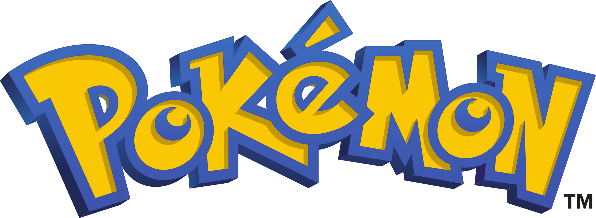
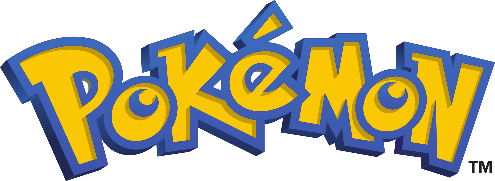

-
Bulbasaur #001

- Grama
- Veneno
Há uma semente de planta em suas costas desde o dia em que este Pokémon nasce. A semente cresce lentamente.
-
Ivysaur #002

- Grama
- Veneno
Quando o bulbo em suas costas cresce, parece perder a capacidade de perder a capacidade de ficar de pé em suas patas traseiras.
-
Venusaur #003

- Grama
- Veneno
Sua planta floresce quando está absorvendo energia solar. Ele permanece em movimento para buscar a luz solar.
-
Charmander #004

- Fogo
Tem preferência pro coisas quentes. Quando chove, diz-se que o vapor jorra da ponta da sua cauda.
-
Charmeleon #005

- Fogo
Charmeleon é um pequeno bípede, dinossauro-como Pokémon com uma aparência semelhante à de sua forma pré-evoluída, Charmander. Charmeleon Charmander difere na medida em que tem uma cor muito mais escura da pele, uma estrutura maior, garras e uma saliência de chifre-como na parte posterior da cabeça, semelhante à de um ornithopod
-
Charizard #006

- Fogo
Charizard é um grande dragão-como Pokémon que é muito diferente de sua forma pré-evoluída. A cor vermelha da pele do Charmeleon não é mais aparente, como Charizard parece ter revertido para a cor laranja / amarelo de Charmander. O fogo na cauda de Charizard vai mudar para uma cor branco-azulada se furioso. O único chifre que estava na parte de trás da cabeça é agora dois, um em cada lado. A diferença mais notável entre Charizard e suas formas pré-evoluídas
-
Squirtle #007

- Agua
Squirtle é um pequeno Pokémon, azul-claro com uma aparência semelhante ao de uma tartaruga. Como tartarugas, Squirtle tem um escudo que cobre seu corpo com orifícios que permitem que seus membros, cauda e cabeça para ser exposto. Ao contrário de uma tartaruga, Squirtle é normalmente bípede.
-
Wartortle #008

- Agua
Algumas diferenças são que Wartortles desenvolveram garras e os dentes mais nítidas e maiores. Suas caudas são maiores e mais macio do que Squirtle e Wartortle de ter desenvolvido grandes orelhas peludas.
-
Blastoise #009

- Agua
Blastoise é uma grande tartaruga-como Pokémon com algumas características semelhantes de suas formas pré-evoluídas. Blastoise tem um grande corpo azul, barriga de cor creme e um grande escudo marrom aros de branco, com seus canhões de água. É agora mais visivelmente mais volumoso do que suas evoluções anteriores. Como as suas formas pré-evoluídas. Blastoise tem um invólucro que cobre o seu corpo todo, o que pode também ser retirada para. Ao contrário do que Squirtle e Wartortle, grandes canhões de água da Blastoise estão localizadas nos lados superiores esquerdo e direito. A água que sai dos canhões são capazes de perfurar buracos através de aço de espessura.
-
Cartepie #010

- Inseto
Caterpie tem um apetite voraz. Pode devorar folhas maiores do que seu corpo bem diante de seus olhos. Este Pokémon libera um cheiro terrivelmente forte das suas antenas.
 
